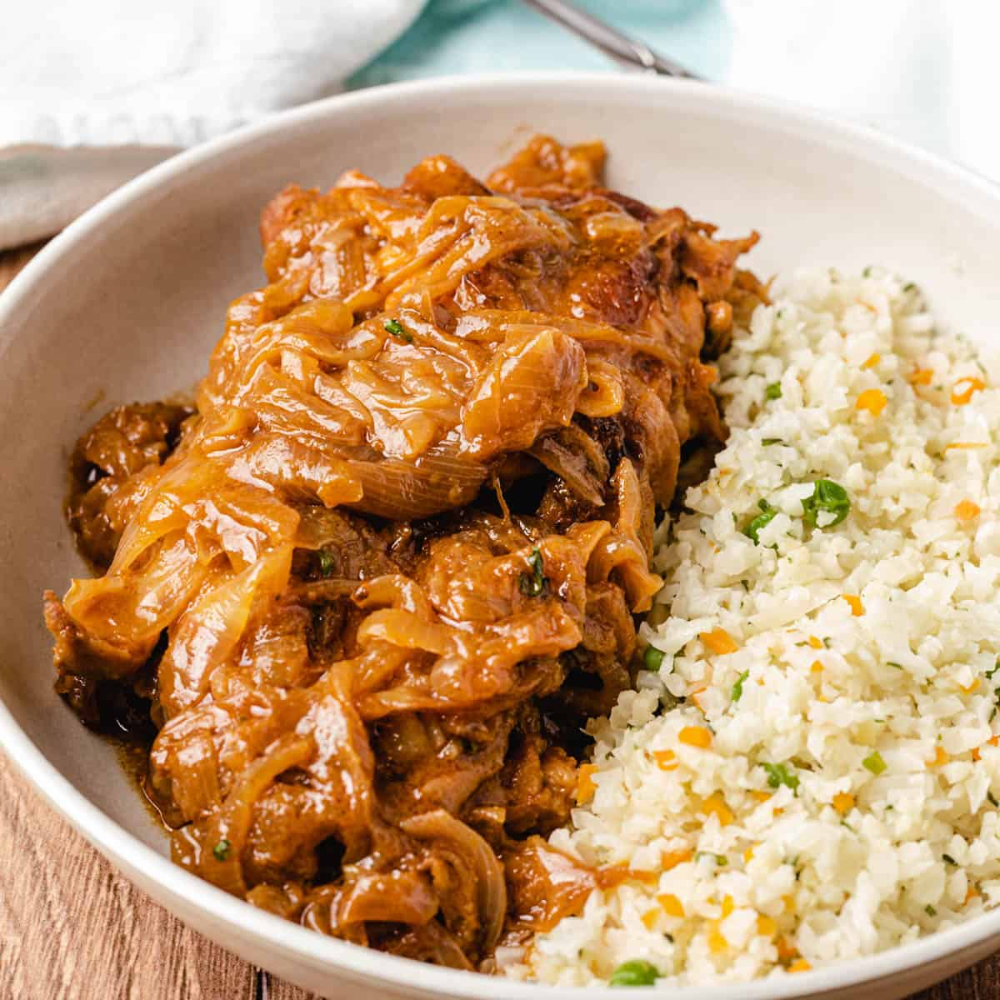

Home
YASSA recipe

Breaf description :
Poulet Yassa is a Senegalese dish made of chicken that has been marinated in a mixture of garlic, lemon juice, dijon mustard, and spices.
It has become very popular throughout West Africa and in other parts of the world.
Ingredients :
- 1 poulet entier
- 7 oignons
- 3 citrons
- 1 cuillère à soupe de moutarde (facultatif)
- 1 tête d'ail
- 1 piment frais
- 1 poivron vert
- Du sel, selon votre goût
- Poivre
Process
- Laver le poulet. Au Sénégal nous avons pour habitude de le laver avec du citron et du sel pour en éliminer la forte odeur
- A l'aide d'un robot hachoir mixer les gousses d'ail, le poivre, la moitié du poivron coupé grossièrement et les piments oiseau.
Vous obtenez une farce qui servira d'assaisonnement.
- Couper le poulet en morceaux de taille moyenne puis incisez chaque morceau.
- Mariner le tout avec la moitié de l'assaisonnement une bonne cuillère à soupe de moutarde,
2 citrons, du poivre noir, un peu de sel, puis conserver dans le réfrigérateur pendant au moins 2 heures
- Faire griller le poulet au four ou idéalement au barbecue.
- Couper les oignons en dé ou lamelle selon votre choix. Dans une marmite mettre de l'huile, lorsque l'huile est un peu chaude ajouter les oignons coupés.
Remuer les oignons pour éviter qu'elle ne colle sur le fond de la marmite.
Ajoutez une feuille de laurier et le piment
- Bien surveiller la cuisson des oignons: lorsque les oignons deviennent translucides ajouter le reste de la farce,
le sel (pas trop) et le poivre. Ajouter le jus d'un gros citron puis un peu d'eau.
- Bien mélanger, puis laisser cuire environ 30 minutes à feu doux.
- Plonger les poulets grillés dans la sauce.
- Servir avec du riz blanc